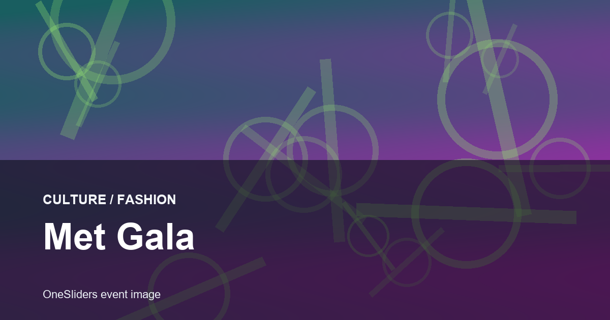

fashion event guide
Met Gala
A compact OneSliders guide to what the event is, how the current edition works and which parts matter most.
First held1948
FrequencyAnnual
Next edition2027
VenueThe Met
History viewEdition results and parts
Use the year switcher for recent editions. The selected edition stays inside this framed sport view.
 More fashionInterested in more fashion?
More fashionInterested in more fashion?Explore related events, places and calendar moments.